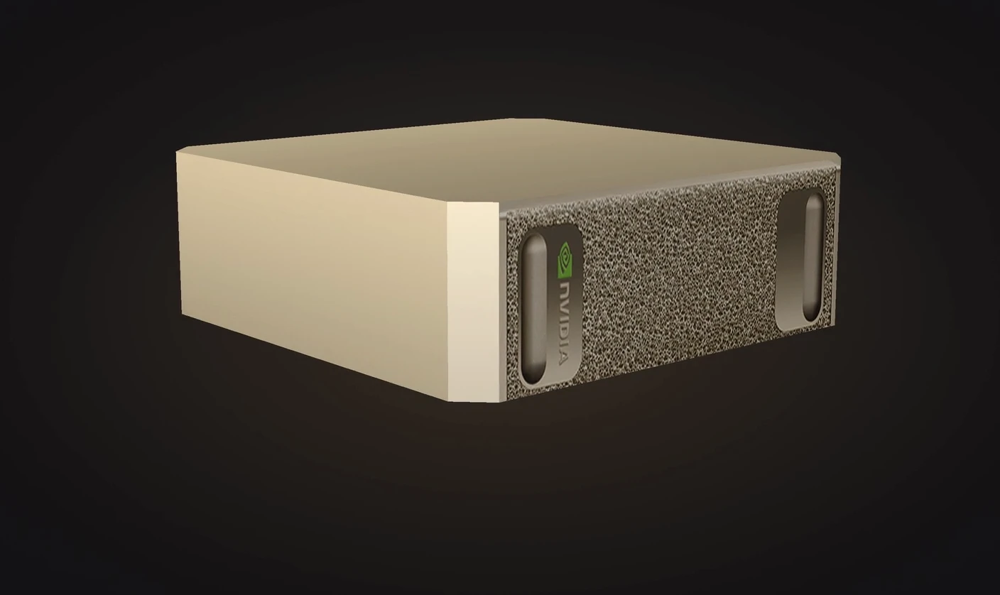

Vuur. Schrift. Elektriciteit. En nu de vierde.
Elke sprong in ons werk begon met gereedschap dat een paar mensen eerder oppakten dan de rest. Systemly zet dat gereedschap bij u op kantoor neer. En uw data blijft er.
Het verschil is niet meer wie harder werkt, maar wie slimmer werkt.
Twee kantoren, hetzelfde vak. Het ene verwerkt zijn administratie met de hand; het andere heeft dat werk toevertrouwd aan een machine die 's nachts doorwerkt en 's ochtends klaarstaat met het resultaat. Vandaag oogt dat verschil klein. Over een jaar is het een achterstand — in uren, in foutmarges, en in de aandacht die overblijft voor klanten.
De vraag is niet meer óf u meegaat. De vraag is wanneer, en met wiens data.
Uw mensen zijn niet aangenomen om over te typen.
Het werk dat niemand mist — overtypen, controleren, samenvoegen, doorsturen — nemen wij uit handen. Lokaal waar het moet, in de cloud waar het kan, en altijd op maat gebouwd voor uw organisatie.
Lokale AI-automatisering
Documentverwerking, data-extractie en terugkerende processen op een AI-machine in uw eigen pand. Voor al het werk waar de AVG meekijkt: uw data blijft binnen.
Automatisering via cloud-AI
Spelen er geen persoonsgegevens of gevoelige dossiers — AVG niet van toepassing — dan zetten wij cloud-AI-diensten in. Sneller opgezet, lagere instapkosten, dezelfde kwaliteit.
Websites & software op maat
Van bedrijfswebsite tot volledige softwareapplicaties voor intern of extern gebruik, op aanvraag ontworpen en gebouwd rond uw processen — en daarna door ons onderhouden.
Tijd voor het echte werk
Het doel van elke oplossing: uren terug voor uw primaire bedrijfsprocessen. Uw medewerkers oordelen, adviseren en houden contact met klanten — de machine doet de rest.
De NVIDIA DGX Spark, op maat voor uw kantoor.
Bij Systemly schaft u meer aan dan een AI-computer. U ontvangt de NVIDIA DGX Spark geleverd mét AI die wij specifiek voor uw kantoor ontwikkelen — van documentextractie tot wiskundige automatiseringen. Volledig op maat gebouwd, door ons ingericht en onderhouden. U ziet alleen het resultaat.

Staat bij u op kantoor
Geen abonnement op rekenkracht die ergens anders staat. Eén machine, in uw eigen pand, die van u is.
Op maat ingewerkt
Wij bouwen de stack rond uw processen en richten alles op locatie in. Pas gereed wanneer het in uw dagelijkse werk draait.
Groeit met u mee
Updates, support en periodiek bezoek. Uw AI-stack ontwikkelt mee met uw kantoor.
Van kennismaking tot dagelijkse werking.
Kennismaking
45 minuten, kosteloos, op uw eigen data. Geheel vrijblijvend.
Analyse op locatie
Wij lopen mee binnen uw organisatie en identificeren de processen die tijd kosten.
Bouwen & opleveren
Op maat gebouwd en door u getoetst, op uw eigen dossiers. U bepaalt wanneer het af is.
Doorontwikkelen
Updates, support en periodiek bezoek. Uw stack groeit met uw organisatie mee.
Alles blijft binnen deze muren.
Geen cloud. Geen externe servers. Geen aanbieder die morgen zijn voorwaarden wijzigt. AVG-proof by design — omdat de machine bij u staat, niet omdat wij het beloven.
“Stapels bankrapportages, omgezet naar één overzicht — zonder dat één dossier het kantoor verliet.”— lopend project voor een vermogensbeheerder · financiële sector
Wat u wilt weten, kort beantwoord.
Wat doet Systemly precies?
Systemly levert AI-automatisering, softwareontwikkeling op maat en websites voor het MKB. Wij automatiseren documentverwerking, data-extractie en terugkerende administratieve processen — lokaal op een AI-machine in uw pand, of via cloud-AI wanneer de AVG dat toelaat.
Is AI-automatisering AVG-proof?
Ja. Waar persoonsgegevens of gevoelige dossiers spelen, draait de AI volledig lokaal op een NVIDIA DGX Spark in uw eigen pand: uw data verlaat het gebouw niet. Spelen er geen persoonsgegevens, dan kan een cloud-oplossing sneller en voordeliger zijn.
Wat kost AI-automatisering voor mijn bedrijf?
Dat hangt af van uw processen. Daarom beginnen wij met een kosteloze kennismaking van 45 minuten op uw eigen data. Daarna weet u precies wat automatisering voor uw bedrijf oplevert en kost.
Bouwen jullie ook complete software of websites?
Ja. Van bedrijfswebsites tot volledige softwareapplicaties voor intern of extern gebruik: op aanvraag ontworpen, gebouwd rond uw processen en daarna door ons onderhouden.
Voor welke bedrijven is Systemly geschikt?
Voor elk MKB-bedrijf met terugkerend document- of administratiewerk: administratie- en advieskantoren, vermogensbeheerders, juridische praktijken, logistiek en meer.
Laat ons zien wat wij voor uw organisatie kunnen betekenen.
45 minuten. Kosteloos. Op uw eigen data. Geheel vrijblijvend.